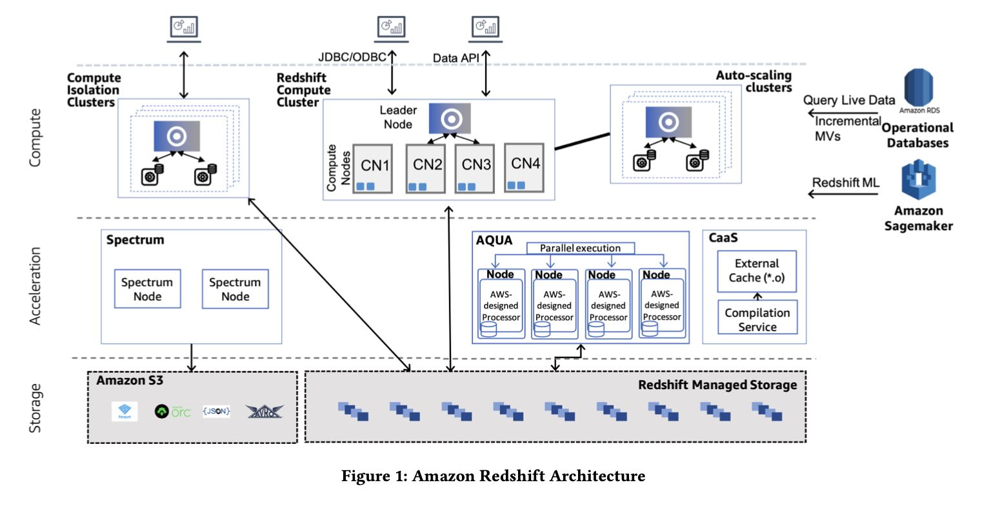
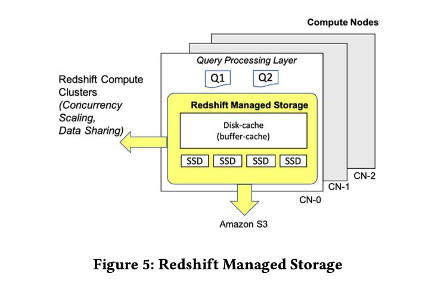
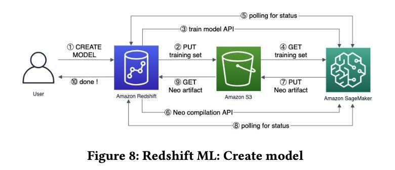

Amazon Redshift Re-invented
Table of Contents
1. 几个角度
这篇文章很粗略地概括了一下Redshift的实现和功能，每个点都比较零碎，从几个角度进行说明：
- 单机性能
- 存储扩展
- 计算扩展
- 自动化调优和运维
- 生态系统
整个Redshift定位还是数仓结构，数仓数据还是托管在RMS(Redshift Managed Storage上面). 因为在存储上还是使用了Partition这样的东西，所以RMS存储节点上并不能弹性伸缩（应该是不能吧？？可以，RMS只是充当Cache角色，Cache miss可以从S3上拉书）不过每个节点上的数据在S3上还有备份，这个是为了方便备份和迁移。直接分析S3上面的数据需要Redshift Spectrum Service的支持，这个东西做了caching+pushdown的功能。整体结构下图所示

2. 单机性能
单机性能
- 计算引擎还是volcano + tuple-based + push-based模型，然后后为了加速使用codegen.
- 因为底层存储还是列式的，所以使用vectorized scan成为column chunk, 然后组装成为tuple
- 某些操作比如probe hash table时候，为了提高CPU cache hit, 还是会将tuple缓存起来进行prefetching, 然后tuples by batch地进行处理，而不是one-by-one处理
- String functions等函数还是可以使用SIMD
- CaaS(compilation service)将compile这个部分单独分离出来对query latency会有保证
- 存储文件格式编码上使用cpu-friendly encoding, AZ64. 压缩效率和ZSTD相当，速度上之比LZO稍微慢点。
- AE(Adaptive Execution) 我觉得例子不是很有代表性。如果join出现大量spill的话，可以创建更大的BF(bloom filter)来减少fasle positive rate.
- AQUA(Advanced Query Accelerator). 我猜想RMS本身没有什么计算功能，AQUA的目标就是caching + pushdown. 另外RMS大小如果不能弹性伸缩的话（可以伸缩），那么AQUA这个对于加速就非常重要，不过AQUA是multi-tenant service. AQUA运行在专有的芯片上。
- QRF(Query Rewriting Framework). DSL-based方便增加规则，对于维护MV，匹配MV，以及查询半结构化数据很方便。
Performance is closely tied to CPU and disk usage. Naturally, Red- shift uses compression to store columns on disk. Redshift supports generic byte-oriented compression algorithms such as LZO and ZSTD, as well as optimized type-specific algorithms. One such com- pression scheme is the recent AZ64 algorithm, which covers numeric and date/time data types. AZ64 achieves compression that is com- parable to ZSTD (which compresses better than LZO but is slightly slower) but with faster decompression rate. For example, a full 3TB TPC-H run improves by 42% when we use AZ64 instead of LZO for all data types that AZ64 supports.
To make AQUA as fast as possible, we designed custom servers that make use of AWS’s Nitro ASICs for hardware-accelerated com- pression and encryption, and leverage FPGAs for high-throughput execution of filtering and aggregation operations. The FPGAs are not programmed on a per-query basis, but rather used to imple- ment a custom multi-core VLIW processor that contains database types and operations as pipelined primitives. A compiler within each node of the service maps operations to either the local CPUs or the accelerators. Doing this provides significant acceleration for complex operations that can be efficiently performed on the FPGA.
Second, QRF is used for creating scripts for incremental mate- rialized view maintenance (see Section 5.4) and enabling answer- ing queries using materialized views. The key intuition behind QRF is that rewritings are easily expressed as pairs of a pattern matcher, which matches and extracts parts of the query representa- tion (AST or algebra), and a generator that creates the new query representation using the parts extracted by the pattern matcher. The conceptual simplicity of QRF has enabled even interns to de- velop complex decorrelation rewritings within days. Furthermore, it enabled Redshift to introduce rewritings pertaining to nested and semistructured data processing (see Section 6.4) and sped up the expansion of the materialized views scope.
3. 存储扩展
RMS架构和说明如下:
- 多级存储buffer-cache, SSD, S3. S3上面有replica, 对于冷数据可以直接从RMS上清除。
- 所有事务写入都会同步地写入到S3上，所以可以认为S3上是source-of-truth, RMS上的DRAM/SSD都是cache, 然后会使用TTL或者是on-demand来删除过期cache.
- 事务写入提供最高的串行隔离性，在保证正确性前提下面提高性能。

Using Amazon S3 as the base gives virtually unlim- ited scale. Redshift Managed Storage (RMS) takes advantage of optimizations such as data block temperature, data block age, and workload patterns to optimize performance and manage data place- ment across tiers of storage automatically.
The Redshift managed storage layer (RMS) is designed for a dura- bility of 99.999999999% and 99.99% availability over a given year, across multiple availability zones (AZs). RMS manages both user data as well as transaction metadata. RMS builds on top of the AWS Nitro System, which features high bandwidth networking and per- formance indistinguishable from bare metal. Compute nodes use large, high performance SSDs as local caches. Redshift leverages workload patterns and techniques such as automatic fine-grained data eviction and intelligent data prefetching, to deliver the perfor- mance of local SSD while scaling storage automatically to Amazon S3.
Amazon S3 is also the data conduit and source of truth for data sharing and machine learning. RMS accelerates data accesses from S3 by using a prefetching scheme that pulls data blocks into memory and caches them to local SSDs.
Transactions are synchronously committed to Amazon S3 by RMS. This enables multiple clusters to access live and transaction- ally consistent data. Writing through to Amazon S3 across different AZs is achieved by batching data writes and hiding latencies under synchronization barriers. State is owned and managed by one clus- ter, while concurrent readers and writers provide compute scaling on the top of RMS. The concurrent clusters spun up on demand rely on snapshot isolation and prioritized on-demand fetching of data to cater to the query requests. Data deleted from the main cluster gets garbage collected from Amazon S3 once all reader references are cleared. RMS uses a combination of time-to-live and on-demand deletes to make sure data does not leak on transaction rollback.
Redshift enforces serializable isolation, thus avoiding data anomalies such as lost updates and read-write skews [5, 19]. With that, Redshift provides industry-leading per- formance without trading off data correctness, and our customers do not need to analyze whether a workload should run on lower transactional isolation levels.
因为Metadata也是存储在S3上的，然后RMS本质上是Cache, 所以这套存储架构方便进行水平扩展(Elastic Resize)和故障恢复(Cross-Instance Restore)
- Elastic Resize. 可以增删节点，当然可以考虑之前节点上的Cache情况
- Cross-Instance Restore. 用户可以根据metadata创建另外一套集群
Cross-Instance Restore and resize leverage the Elastic Resize technology to provide migration in minutes. Both Elastic Resize and Cross-Instance Restore are heavily used features, where customers use them for reconfiguration over 15,000 times a month. The failure rates are less than 0.0001%.
RMS上面Cache淘汰策略如下：
- two-level clock-based LFU
- 完成20% rehydration（可能是加载20%的S3上数据）就可以达到80%的hit rate
- disk-cache automatically scales up. 这个不知道怎么搞？放到tmpfs?
The tiered-storage cache keeps track of the number of accesses of data blocks so that each cluster maintains its working set locally. It builds a two-level clock-based cache replacement policy to track data blocks stored in local disk for each compute node. Cache policy places a cold data block B (i.e., accessed for the first time by customer query) in the low-level clock cache and increases B’s reference count on every access. When B becomes hot (i.e., accessed multiple times), cache policy promotes it to the high-level clock cache. During eviction, the reference count of each block pointed by clock pointer is decremented. When the reference count of B is zero, B is either demoted from high-level clock to low-level clock or evicted from the cache.
RMS uses the tiered-storage cache to drive rehydration (i.e., what data to cache on local SSDs) after a cluster reconfiguration (e.g., Elastic Resize, cluster restore, hardware failures). In all these scenarios, the compute nodes rehydrate their local disks with the data blocks that have highest possibility to be accessed by customer queries. With this optimization, customer’s queries achieve more than 80% local disk hit rate at 20% rehydration completion.
Finally, to boost performance, Redshift utilizes a dynamic disk- cache on top of tiered-storage cache to maintain the hottest blocks in memory. In addition, the disk-cache keeps other blocks created by queries such as new data blocks and query-specific temporary blocks. Disk-cache automatically scales up when memory is avail- able and proactively scales down as the system is near memory exhaustion. These changes lead up to a 30% performance improve- ment in benchmarks as well as customer workloads.
4. 自动化调优和运维
ATO(Automatic Table Optimizations)可以优化分区键和排序键
AutoWLM(Automatic Workload Management)则是用来管理Query准入：
- 对Query可以预测它的执行时间，然后放在队列中合适的位置；同时可以预测它占用内存的大小，来判断当前是否可以执行它
- 可以根据用户定义的优先级别来分配CPU/IO资源(expoentially).
- 高优先级别的查询可以抢占低优先级别，但是也考虑wasted work来避免低优先级别查询不断被kill.
Redshift’s Automatic Workload Manager (AutoWLM) is respon- sible for admission control, scheduling and resource allocation. When a query arrives, AutoWLM converts its execution plan and optimizer-derived statistics into a feature vector, which is evaluated against machine learning models to estimate metrics like execution time, memory consumption and compilation time. Based on these characteristics, the query finds its place in the execution queue. Red- shift uses execution time prediction to schedule short queries ahead of long ones. A query may proceed to execution if its estimated memory footprint can be allocated from the query memory pool. As more queries are admitted for execution, AutoWLM monitors the utilization of cluster’s resources using a feedback mechanism based on queuing theory. When utilization is too high, AutoWLM throttles the concurrency level to prevent increase in query latency due to over-saturated query resources.
During admission control, AutoWLM employs a weighted round- robin scheme for scheduling higher priority queries more often than low priority ones. In addition, higher priority queries get a bigger share of hardware resources. Redshift divides CPU and I/O in exponentially decreasing chunks for decreasing priority level when queries with different priorities are running concurrently. This accelerates higher priority queries exponentially as compared to lower priority ones. If a higher priority query arrives after a lower priority query started executing, AutoWLM preempts (i.e., aborts and restarts) the lower priority query to make space. In case of several low priority queries, AutoWLM preempts the query that is furthest from completion, using the query’s estimated execution time. To prevent starvation of lower priority queries, a query’s probability of being preempted is reduced with each preemption. Even so, if too many queries are preempted, throughput suffers. To remedy this, AutoWLM prevents preemption if wasted work ratio (i.e., time lost due to preemption over total time) breaches a threshold. As a result of query priorities, when cluster resources are exhausted, mostly lower priority queries would queue to let higher priority workloads meet their SLAs.
QPF(Query Predicator Framework) 可以在线预测Query执行时间和内存开销，来调整执行计划比如CaaS中使用optimzied/debug compilation.
MV(Materialized Views) 可以自动选择合适的时机和资源使用来维护MV.
Second, Redshift can automate the timing of the maintenance. In particular, Redshift detects which MVs are outdated and maintains a priority queue to choose which MVs to maintain in the back- ground. The prioritization of refreshes is based on combining (1) the utility of a materialized view in the query workload and (2) the cost of refreshing the materialized view. The goal is to maximize the overall performance benefit of materialized views. For 95% of MVs, Redshift brings the views up-to-date within 15 minutes of a base table change.
Smart Warmpools, Gray Failure Detection and Auto-Remediation 智能warmpool, 异常节点检测以及自动修复
Keeping all of the aforementioned operations low latency re- quires a high hit rate when a node is acquired from the warmpool. To guarantee high hit rate, Redshift built a machine learning model to forecast how many EC2 instances are required for a given warm- pool at any time. This system dynamically adjusts warmpools in each region and availability zone to save on infrastructure cost without sacrificing latency.
While fail-stop failures are relatively easy to detect, the gray failures are way more challenging [14]. For gray failures, Redshift has developed outlier detection algorithms that identify with confidence sub-performing components (e.g., slow disks, NICs, etc.) and automatically trigger the corresponding remediation actions.
5. 生态系统
在综述部分大致介绍了一下生态系统：
- Data on S3
- ML SageMaker
- Federated Query(OLTP Sources) + GEV(Glue Elastic Views)
- Redshift’s SUPER Schemaless Processing(JSON类型?)
- UDF in Lambda
Fourth, customers expect Redshift to integrate seamlessly with the AWS ecosystem and other AWS purpose built services. Red- shift provides federated queries to transactional databases (e.g., DynamoDB [10] and Aurora [22]), Amazon S3 object storage, and the ML services of Amazon Sagemaker. Through Glue Elastic Views, customers can create Materialized Views in Redshift that are in- crementally refreshed on updates of base tables in DynamoDB or Amazon OpenSearch. Redshift also provides ingestion and querying of semistructured data with the SUPER type and PartiQL [2].
使用AWS Spectrum + (HMS / AWS Glue / AWS Lake Formation catalog)来访问S3上数据. 对于这些外部数据可以使用result cache, 如果要使用MV则需要complete refresh.
In order to leverage Spectrum, Redshift customers register their external tables in either Hive Metastore, AWS Glue or AWS Lake Formation catalog. During query planning, Spectrum tables are localized into temporary tables to internally represent the external table. Subsequently, queries are rewritten and isolated to Spectrum sub-queries in order to pushdown filters and aggregation. Either through S3 listing or from manifests belonging to partitions, the leader node generates scan ranges. Along with the serialized plan, scan ranges are sent over to compute nodes. An asynchronous Thrift request is made to the Spectrum instance with a presigned S3 URL to retrieve S3 objects. To speed-up repetitive Spectrum queries, Redshift externalized a result cache and also added support for materialized views over external tables with complete refresh.
ML SageMaker 可以将数据dump到S3上并且触发SageMaker, 生成模型之后编译成为C++代码来使用这个模型

UDF in Lambda使用Lambda执行环境来简化UDF的开发
Redshift supports the creation of user-defined functions (UDFs) that are backed by AWS Lambda code. This allows customers to integrate with external components outside of Redshift and en- ables use cases like i) data enrichment from external data stores or external APIs, ii) data masking and tokenization with external providers, iii) migrating legacy UDFs written in C, C++ or Java. Redshift Lambda UDFs are designed to perform efficiently and se- curely. Each data slice in the Redshift cluster batches the relevant tuples and invokes Lambda function in parallel. The data transfer happens over a separate isolated network, inaccessible by clients.